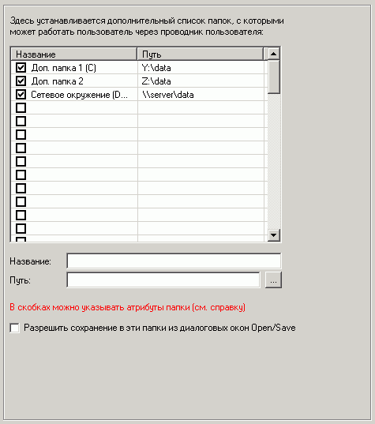

| Проводник: Дополнительные папки |

Можно установить дополнительные папки, с которыми пользователь сможет работать в проводнике пользователя (или даже в диалоговых окнах открытия/сохранения файлов).
В скобках после названия можно указывать атрибуты папки, т.е. те атрибуты, которые будут запрещены для данной папки.
Допустимые константы:
D - запрет на удаление из папки
W - запрет на запись в папку
C - запрет на копирование из папки
Можно установить сразу несколько запретов.
Например, необходимо создать папку "Data", с которой нельзя будет копировать файлы.
В этом случае в названии необходимо указать "Data (C)".
Если необходимо создать папку "Моя папка", с которой нельзя будет копировать файлы и нельзя удалять файлы.
В этом случае в названии необходимо указать "Моя папка (CD)".
Если атрибуты не указывать, то по умолчанию запреты не накладываются.